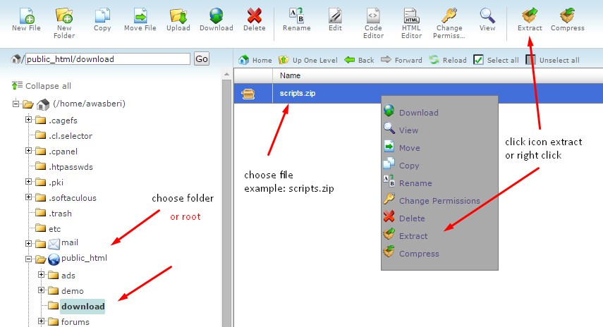
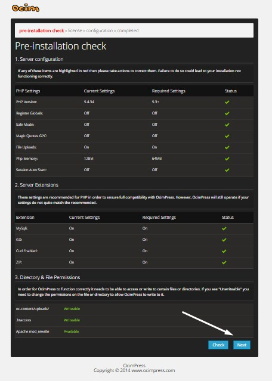

Introduction
Terima kasih telah menyempatkan untuk membaca panduan sederhana yang telah saya buat ini, mohon untuk dipahami bagaimana cara install cms terlebih dahulu. Jikalau memang anda merasa kesulitan silahkan langsung hubungi saya, alamat email dan sebagainya ada dibawah tutorial ini.
Upload the files
Untuk cara install silahkan ikuti tutorial dibawah ini:
- Extract file "scripts.zip" ke folder file manager hosting dimana folder tersebut akan anda install untuk Sosbok. Contoh file manager menggunakan cpanel:
 - Jika berhasil nanti akan seperti ini
Database Settings
Cara membuat database dibawah ini menggunakan cpanel jadi sesuaikan dengan hosting anda:- Masuk ke sub menu "MySQL Database Wizard" yang berada di menu Database.
- Kemudian isi kolom kosong dibawah tulisan "Step 1: Create A Database", dimana ini bertujuan untuk membuat sebuah database baru. Jika sudah silahkan klik tulisan Next Step.
- Sama dengan langkah kedua silahkan isi kolom kosong dan harap catat "passwordnya".
- Jika berhasil maka selanjutnya yaitu memberikan hak PRIVILEGES, silahkan centang tombol checkbox pada tulisan "ALL PRIVILEGES".
- Contoh jika berhasil akan seperti ini.
Installation Scripts
Jika semuanya sudah dipersiapkan dari upload file serta membuat database, maka langkah selanjutnya yaitu install CMS OcimPress. Berikut ini langkah-langkahnya:
- Buka tab baru di browser anda, kemudian ketik nama domain yang akan anda install tersebut *(Misal: http://domain.com/). Jika sudah maka akan diarahkan kehalaman http://domain.com/setup/install.php, tampilannya akan seperti ini:
 - Klik tombol "Next" terus sampai nanti berada dihalaman General Configuration, dimana halaman ini bertujuan untuk mengisi Database serta informasi admin.
- Langkah awal pada kolom pertama "MySQL database configuration" yaitu mengisi informasi database, silahkan isi sesuai dengan apa yang anda sudah buat sebelumnya lalu masukan kedalam form yang tersedia (Untuk kolom "MySQL Hostname" bagi pengguna cpanel biasa secara default yaitu localhost, tapi jika anda menggunakan hosting gratis seperti idhostinger maka akan berbeda jadi sesuaikan).

- Untuk kolom kedua "Common configuration" anda bebas mengisinya tapi harap ingat alamat domain pada kolom URL jangan anda ubah.
- Kolom terakhir "Administrator configuration" harap anda ingat untuk username dan password, karena nantinya akan digunakan untuk data login ke menu admin panel.
- Jika sudah silahkan klik tombol Next, jika gagal maka akan ada notifikasi dimana letak kesalahan anda. Tetapi jika berhasil tampilan akhir akan seperti ini, lalu klik tombol "admin" untuk masuk ke menu dashboard admin:
Admin Dashboard
Pada halaman admin anda bisa menemukan berbagai macam menu seperti posts, page, comment dan lainnya. Namun langkah awal yang harus anda lakukan yaitu mengatur pengaturan situs sendiri tepatnya berada di menu "Setting", nah silahkan anda buka satu-satu dan atur sesuai keinginan anda.
Themes
Untuk themes default sendiri terdapat 3 terakhir saya tulis tutorial ini, dimana anda bebas untuk mengedit maupun menggunakannya. Jika anda membeli sebuah themes premium dari ocimscripts.com maka setting akan bertambah, contoh jika anda membeli theme AGC Video Tubeless V1.0 maka akan seperti ini langkahnya.
- Silahkan masuk terlebih dahulu ke halaman themes letaknya berada di menu Appearance -> Themes.
- Kemudian arahkan cursor mouse anda ke themes bernama Tubeless, maka nanti akan muncul sebuah tombol 'Activate' dan klik tombol tersebut.
- Selesai dan silahkan buka domain anda untuk memastikan semuanya berjalan normal.
Setting
Pada script ocim movie2k setting atau pengaturan terdapat di menu home, anda tinggal menuju halaman depan dan klik menu admin seperti gambar dibawah ini:
Cara memasukan hoster atau language tinggal menulis nama dan pilih file yang sudah saya sediakan beberapa di folder Icon and flag.
Requirement
- PHP 5.3+
- MySQL and MySQLi 5+
- Operating System : Linux
- Web Server : Apache
- mod_rewrite - Apache HTTP Server
Thank you for purchasing this script. If you have any questions that are beyond the scope of this help file, please feel free to email us via our email address
alimunandar@gmail.com
http://www.ocimscripts.com
http://ocimpress.com
Thanks so much!